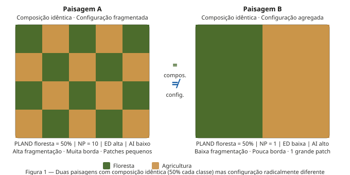
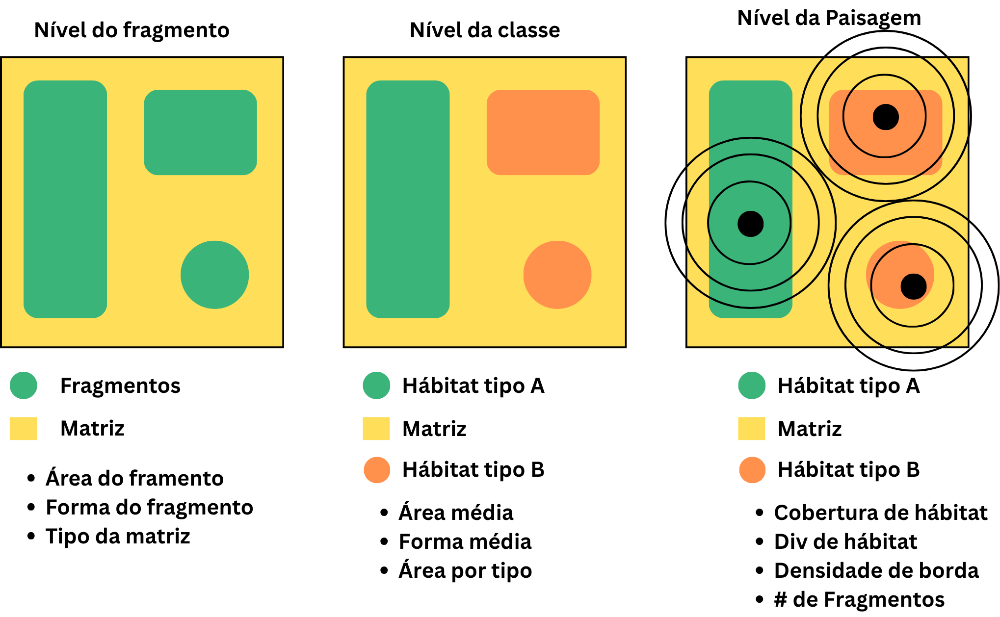
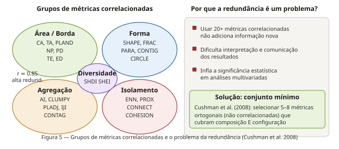
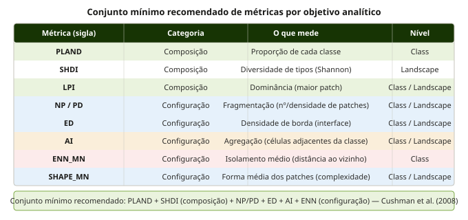

Tipos de Métricas de Paisagem
Composição vs. Configuração — Semana 9 · BO-304
Departamento de Botânica · UFPE
2026-05-22
O paradoxo que motiva esta aula

A divisão fundamental
Composição:
- Mede o que está presente e em que quantidade
- Sem referência à posição espacial dos patches
- Calculável a partir de uma tabela de área por classe
- Aplicável apenas no nível de paisagem
Configuração:
- Mede como os elementos estão dispostos
- Requer coordenadas e relações espaciais
- Exige operações sobre o raster (adjacência, distância, forma)
- Aplicável nos três níveis: patch, class, landscape
Regra prática:
Se você pode calcular a métrica sem saber onde cada pixel está, é composição. Se precisa das coordenadas, é configuração.
Métricas de composição: PLAND e PR
PLAND — Proporção da paisagem:
\[PLAND_i = \frac{\sum a_{ij}}{A} \times 100\]
- Primeira métrica de qualquer análise
- Informa quanto de cada tipo existe
- Intervalo: 0 < PLAND ≤ 100
PR — Riqueza de tipos:
\[PR = m\]
- Número de tipos distintos de patch
- Análogo à riqueza de espécies
- PR = 1: monocultura total
- PR = 5: cinco tipos distintos
Métricas de composição: SHDI e LPI
SHDI — Índice de Diversidade de Shannon:
\[SHDI = -\sum_{i=1}^{m} p_i \cdot \ln(p_i)\]
- Integra riqueza + equitatividade
- Sensível a tipos raros (peso pelo logaritmo)
LPI — Maior Patch:
\[LPI = \frac{a_{max}}{A} \times 100\]
- Medida de dominância
- LPI ≈ PLAND: paisagem intacta
- LPI << PLAND: paisagem fragmentada
Métricas de composição

Métricas de configuração: NP e ED
NP / PD — Fragmentação:
- NP = número total de patches da classe
- PD = NP normalizado por área (patches/ha)
- NP alto + PLAND alto = habitat presente mas fragmentado
- NP = 1 = um único bloco contíguo
ED — Densidade de borda:
\[ED = \frac{E_{total}}{A} \quad (m/ha)\]
- E = comprimento total de bordas entre classes
- ED alto = muito fracionamento e interface
- ED é a tradução métrica do efeito de borda
Métricas de configuração: AI e ENN
AI — Índice de Agregação:
\[AI = \frac{g_{ii}}{g_{ii,max}} \times 100\]
- \(g_{ii}\) = adjacências entre células da mesma classe
- AI = 0: maximamente disperso (xadrez perfeito)
- AI = 100: maximamente agregado (1 bloco compacto)
- Distingue xadrez de blocos com mesma composição
ENN — Distância ao vizinho mais próximo:
\[ENN = d_{ij} \quad (m)\]
- Distância borda a borda entre patches da mesma classe
- Mede isolamento espacial
- Conectividade estrutural ↑ = ENN ↓
Os três níveis hierárquicos

O que cada nível responde
Qual patch tem maior risco de extinção local?
Qual classe de habitat está mais fragmentada?
Qual bacia hidrográfica tem maior integridade de paisagem?
Como a fragmentação mudou ao longo de 30 anos?
O problema da redundância
O landscapemetrics oferece 130+ métricas
Isso não significa que todas são independentes:
- CA e PLAND: correlação > 0.95
- NP e PD: correlação = 1.0 (PD = NP/área)
- SHAPE_MN e FRAC_MN: r > 0.90
- AI e CLUMPY: r > 0.85
Solução: selecionar um conjunto mínimo e ortogonal
O problema da redundância

O conjunto mínimo recomendado
Princípio de parcimônia:
- Selecionar métricas ortogonais (não correlacionadas)
- Cobrir composição E configuração
- 5–8 métricas são suficientes para a maioria das análises

Calculando no R: o paradoxo visual
Duas paisagens simuladas:
library(landscapemetrics)
library(terra)
# Paisagem A: xadrez (fragmentada)
r_A <- rast(nrows=20, ncols=20,
vals = rep(c(1L, 2L), 200))
plot(r_A)
# Paisagem B: dois blocos (agregada)
r_B <- rast(nrows=20, ncols=20,
vals = c(rep(1L,200), rep(2L,200)))
plot(r_B)
# Métricas: composição = IGUAL
# Métricas: configuração = DIFERENTE
calculate_lsm(list(r_A, r_B), what = c(
"lsm_l_shdi", # composição: igual
"lsm_l_np", # config: muito diferente
"lsm_l_ed", # config: muito diferente
"lsm_l_ai" # config: muito diferente
))Integrando com as semanas anteriores
- Semana 6 — Conectividade:
- ENN_MN e AI são métricas de conectividade estrutural
- ED é proxy da intensidade dos fluxos laterais
- Semana 7 — Metapopulações:
- NP e AREA informam sobre o número e tamanho de patches
- ENN informa sobre o isolamento
- LPI identifica o maior patch como candidato a “fonte”
- Semana 8 — Fluxos:
- ED é proxy da quantidade de borda e das zonas de troca biogeoquímica
- PLAND de zona ripária = proxy de capacidade de tamponamento
Síntese: quatro regras práticas
Regra 1 — Sempre use ambas as categorias - Composição sem configuração é incompleto - Configuração sem composição é sem contexto
Regra 2 — Escolha o nível certo - Pergunta sobre espécie → métricas de categoria - Comparação de paisagens → métricas de paisagem - Gestão de fragmento individual → métricas do fragmento
Regra 3 — Seja parcimonioso - 5–8 métricas ortogonais - Verifique correlações
Regra 4 — Interprete no contexto ecológico - Um número isolado não tem significado - Compare com referência (paisagem intacta, histórico, outros biomas)
Resumo
→ Composição = o que há e em que quantidade
→ Configuração = como está disposto
→ Mesma composição pode ter configurações opostas — e consequências ecológicas opostas
→ Três níveis: patch (individual) · class (por tipo) · landscape (paisagem inteira)